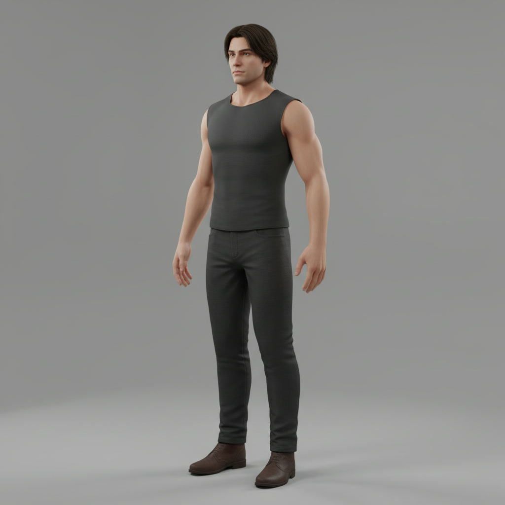

Protótipo isolado — Ragged Clothes (ID 10101)
Este teste não altera o Provador. A imagem da peça fica sobre o Avatar 3 e os controles permitem ajustar posição e escala para avaliar o encaixe.

A imagem principal é carregada do Questlog. Se não estiver disponível, o teste tenta usar a cópia do mesmo arquivo no CDN do MetaBattle. Os ajustes são temporários e servem apenas para avaliação visual.